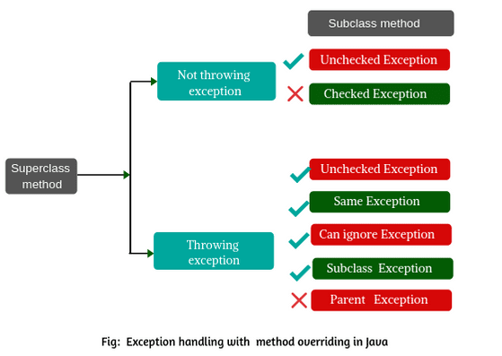

1. Method Overloading vs. Method Overriding
| Feature | Method Overloading | Method Overriding |
|---|---|---|
| Definition | Multiple methods with the same name but different parameters in the same class | Subclass provides a specific implementation of a method already defined in its superclass |
| Purpose | Increases readability (same operation for different inputs) | Enables polymorphism (same method behaves differently in subclasses) |
| Inheritance | Can happen within the same class or between parent-child classes | Requires inheritance (only in child classes) |
| Parameter Rules | Must differ in: • Number of parameters • Type of parameters • Order of parameters |
Must match exactly: • Same name • Same parameters • Same return type (or covariant) |
| Return Type | Can be same or different | Must be same or covariant (subclass of parent's return type) |
| Access Modifier | No restrictions (can vary) | Cannot be more restrictive than parent's method (e.g., parent protected → child cannot be private) |
| Exception Handling | No restrictions on thrown exceptions | Cannot throw broader checked exceptions than parent |
| Binding | Compile-time (static polymorphism) | Runtime (dynamic polymorphism) |
| Performance | No impact (resolved at compile time) | Slight overhead (JVM decides which method to call at runtime) |
| Keyword | Not required | Uses @Override annotation (recommended) |
Key Differences Explained
1. Parameter Rules
• Overloading:
void print(int a) { ... }
void print(String a) { ... } // Valid (different parameter types)
• Overriding:
class Parent { void show(int x) { ... } }
class Child extends Parent {
@Override
void show(int x) { ... } // Must match parameters exactly
}
2. Return Type
• Overloading: Return types can differ freely.
int process(int a) { ... }
String process(String a) { ... } // Valid
• Overriding: Return types must match or be covariant.
class Parent { Number get() { ... } }
class Child extends Parent {
@Override
Integer get() { ... } // Valid (Integer extends Number)
}
3. Access Modifiers
• Overriding: Child method cannot be more restrictive.
class Parent { public void demo() { ... } }
class Child extends Parent {
// void demo() { ... } // Error (default is more restrictive than public)
protected void demo() { ... } // Error
public void demo() { ... } // Valid
}
4. Exception Handling
• Overriding: Child cannot throw broader checked exceptions.

class Parent { void foo() throws IOException { ... } }
class Child extends Parent {
@Override
void foo() throws Exception { ... } // Error (Exception is broader than IOException)
}
5. Static vs. Instance Methods
Static methods can be overloaded but not overridden (they are hidden, not overridden).
class Parent { static void test() { ... } }
class Child extends Parent {
static void test() { ... } // Method hiding (not overriding)
}